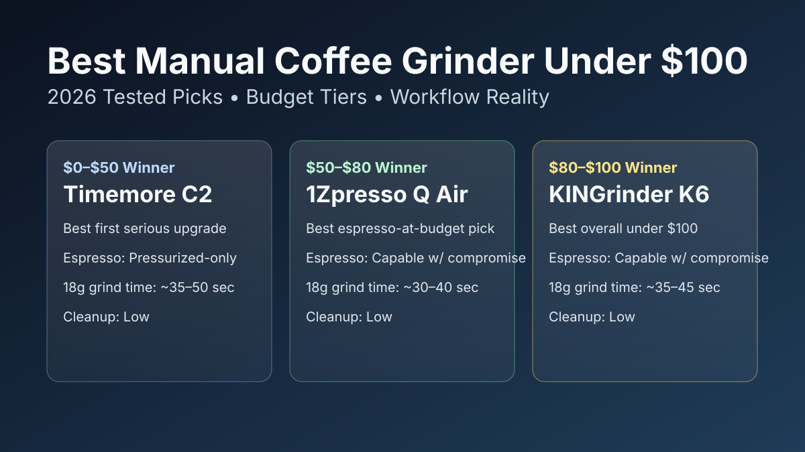

Best Manual Coffee Grinder Under $100 (2026): 7 Top Picks Compared
A good hand grinder under $100 can beat many cheap electric grinders on cup clarity. The best pick depends on burr quality, adjustment usability, grind speed, and whether you actually need espresso-capable range or just cleaner filter coffee.

Quick answer: The KINGrinder K6 is the best manual coffee grinder under $100 for most people because it combines strong burr consistency, broad brew range, and manageable effort per dose. For espresso-first use, 1Zpresso Q Air is easier to dial than most sub-$100 options, while Timemore C2 remains the easiest starter pick.
TL;DR winners
Best overall: KINGrinder K6
Best for espresso-at-budget: 1Zpresso Q Air
Easiest workflow: Timemore Chestnut C2
Best travel pick: Hario Mini-Slim Plus
Comparison table
Prices checked: March 2026
| Product | Best for | Typical street price | Burr material | Adjustment style | Capacity (g) | Grind speed/effort note (18g) | Espresso suitability | Cleanup effort | Price band | Check price |
|---|---|---|---|---|---|---|---|---|---|---|
| KINGrinder K6 | Best overall performance under $100 | $89-$99 | Steel | External stepped (fine clicks) | 30 | ~35-45 sec, moderate effort | Capable-with-compromise | Low | $$ | Check price |
| 1Zpresso Q Air | Best espresso-at-budget + travel | $69-$89 | Steel | Internal stepped (micro click feel) | 20 | ~30-40 sec, moderate effort | Capable-with-compromise | Low | $$ | Check price |
| Timemore Chestnut C2 | Easiest first upgrade from blade grinders | $45-$69 | Steel | Internal stepped (coarser jumps) | 25 | ~35-50 sec, low effort | Pressurized-only | Low | $ | Check price |
| Normcore V2 Hand Grinder | Best ergonomic body feel | $69-$89 | Steel | External stepped | 22 | ~35-45 sec, low-to-moderate effort | Pressurized-only | Medium | $$ | Check price |
| KINGrinder P2 | Best value under $50 | $39-$49 | Steel | Internal stepped | 20 | ~40-55 sec, moderate effort | No | Low | $ | Check price |
| Hario Mini-Slim Plus | Best lightweight travel pick | $25-$39 | Ceramic | Internal stepped (wide jumps) | 24 | ~60-90 sec, higher effort | No | Medium | $ | Check price |
| Porlex Mini II | Best compact stainless travel body | $69-$89 | Ceramic | Internal stepped | 20 | ~55-75 sec, moderate effort | No | Medium | $$ | Check price |
How we evaluate: We score each grinder on brew quality, grinder consistency, usability, cleaning burden, and value for money. For this SERP, we also weight grind speed and realistic espresso fit under $100.
Product picks by budget tier
$0-$50 tier winner: Timemore Chestnut C2
Verdict: Best for beginners who want cleaner filter cups without overthinking adjustment settings.
Buy this if... you mostly brew pour over, AeroPress, or French press and want the easiest under-$50 recommendation.
Skip this if... you need repeatable non-pressurized espresso dialing.
Pros
- Strong grind consistency for the entry tier.
- Low effort and predictable daily workflow.
- Easy to clean with minimal tools.
Cons
- Internal adjustment is slower to change between brew styles.
- Espresso range is too coarse for demanding setups.
Key specs: Steel burr · internal stepped adjustment · 25g capacity · Espresso suitability: Pressurized-only.
Why it wins this slot: It offers the most reliable cup quality per dollar in the entry budget tier.
Retention/static note: Very low retention, with minor fines clinging around the catch cup after dry-weather grinding.
$50-$80 tier winner: 1Zpresso Q Air
Verdict: Best for buyers who want better adjustment control and faster grind speed without crossing into premium price territory.
Buy this if... you split time between filter brewing and occasional espresso experimentation.
Skip this if... you want external click adjustment for faster brew-method switching.
Pros
- Finer click behavior than most grinders in this price bracket.
- Fast enough for daily 1-2 cup workflows.
- Compact travel-friendly form factor.
Cons
- Smaller capacity requires multiple rounds for bigger batches.
- Internal adjustment still needs a bit of routine.
Key specs: Steel burr · internal stepped adjustment · 20g capacity · Espresso suitability: Capable-with-compromise.
Why it wins this slot: It gives the best balance of espresso realism and travel-ready convenience in the mid budget band.
Retention/static note: Retention is near-zero; static is generally low unless beans are very light and dry.
$80-$100 tier winner: KINGrinder K6
Verdict: Best for home users who want one hand grinder that can cover French press through espresso-at-budget with fewer compromises.
Buy this if... you want the highest ceiling under $100 and care about repeatability.
Skip this if... your priority is the absolute lightest travel grinder.
Pros
- Wide practical grind range with strong consistency.
- External-style dial feel is faster for workflow changes.
- Excellent value compared with pricier manual grinders.
Cons
- Costs close to the top of this budget cap.
- Heavier body than minimalist travel options.
Key specs: Steel burr · fine stepped adjustment · 30g capacity · Espresso suitability: Capable-with-compromise.
Why it wins this slot: It is the clearest all-round performer for buyers who want one grinder and done under $100.
Retention/static note: Low retention with consistent grounds drop; light static can appear after rapid back-to-back doses.
Workflow realism: speed, effort, and dial-in expectations
How long should hand grinding take for one cup?
For a 15-20g dose, strong steel-burr options usually land around 30-50 seconds for filter and 40-70 seconds for espresso-fine. Ceramic travel grinders can take 60-90 seconds with more effort. If daily speed matters, prioritize burr geometry and handle leverage over tiny weight savings.
Internal vs external adjustment in real use
Internal clicks are cheaper to manufacture but slower when switching from French press to espresso. External dials reduce friction for experimentation. Beginners who brew one method most days can live with internal systems; mixed-method brewers usually prefer easier adjustment access.
Are manual grinders under $100 better than electric options at this budget?
Usually yes for grind quality. Sub-$100 electric grinders often use less precise burr sets (or blade systems), while manual options put more of the budget into burr quality. If you want faster zero-effort mornings, compare with our best burr grinder under $200 picks.
For espresso-specific options, use our best hand grinder for espresso under $100 guide. For brew recipe consistency, pair your grinder with our coffee brewing ratio guide and dial references from burr grinder settings for espresso. For maintenance, follow how to clean a burr coffee grinder.
FAQ
Are manual grinders better than electric grinders under $100?
In most cases, yes. Hand grinders under $100 usually deliver better burr quality and cleaner grind distribution than equivalently priced electric models, which improves cup clarity and consistency.
Can a manual grinder under $100 make real espresso?
Some can, but with compromises. Models like KINGrinder K6 and 1Zpresso Q Air can pull usable non-pressurized shots, yet dialing is slower and less forgiving than higher-end espresso-focused grinders.
Steel burr vs ceramic burr: which should I choose on this budget?
Choose steel for faster grinding and tighter consistency. Choose ceramic only if you prioritize low-cost travel use and can accept slower grind speed with less precise espresso performance.
How long should it take to hand-grind one cup (15-20g)?
Expect roughly 30-50 seconds for filter and 40-70 seconds for espresso-fine with decent steel burrs. Slower ceramic grinders can take up to 90 seconds and more arm effort.
How often should I clean a hand grinder for consistent taste?
Brush loose grounds every few days, deep-clean burrs every 3-5 weeks, and clean sooner after oily beans. Regular cleaning keeps adjustment behavior and flavor output more predictable.
Internal vs external grind adjustment: which is easier for beginners?
External adjustment is easier to learn and faster to repeat. Internal clicks are fine for single-method users but slower when switching brew styles because you must partially disassemble or reset more carefully.
Related guides
- Best Hand Grinder for Espresso Under $100
- Best Burr Coffee Grinder Under $200
- Best Coffee Grinder for French Press
- Best Coffee Grinder for Pour Over
- AeroPress vs French Press (Fast Buyer Guide)
- Coffee Brewing Ratio Guide
- How to Clean a Burr Coffee Grinder